Rutas de Running en Las Terrenas
Las Terrenas esconde uno de los secretos mejor guardados del Caribe para los amantes del running: caminos costeros al amanecer con el mar a un lado y la selva tropical al otro, sin un alma a la vista. Correr aquí no es solo entrenamiento — es una experiencia que pocas ciudades del mundo pueden ofrecer.
Hemos seleccionado tres rutas circulares que salen desde el centro del pueblo o sus alrededores, con distancias entre 6 y 9 km, aptas para nivel medio y sin desniveles exigentes. Perfectas para mantener tu ritmo de entrenamiento durante las vacaciones.
Ruta 1 · Circular Playa Bonita
El recorrido
Sale desde el centro de Las Terrenas y lleva directamente hacia Playa Bonita, una de las playas más fotogénicas de Samaná. El punto de giro llega a los 2,66 km, justo en la orilla, donde puedes hacer una pausa para recuperar el aliento con el Atlántico enfrente.
El regreso sigue una ruta circular diferente, lo que permite descubrir caminos secundarios entre cocoteros. La mayor parte del trayecto transcurre por pistas pavimentadas, cómodas y seguras para correr.
Sal antes de las 7:00 h para evitar el calor y disfrutar de Playa Bonita prácticamente sola. Es el momento más mágico del día en esta ruta.
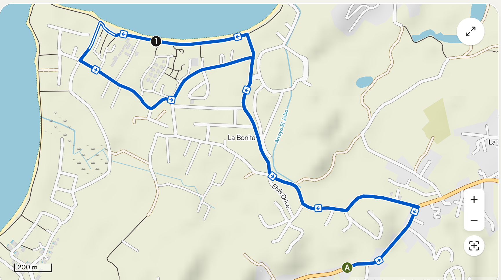
Recorrido circular · 6,32 km · salida desde Las Terrenas
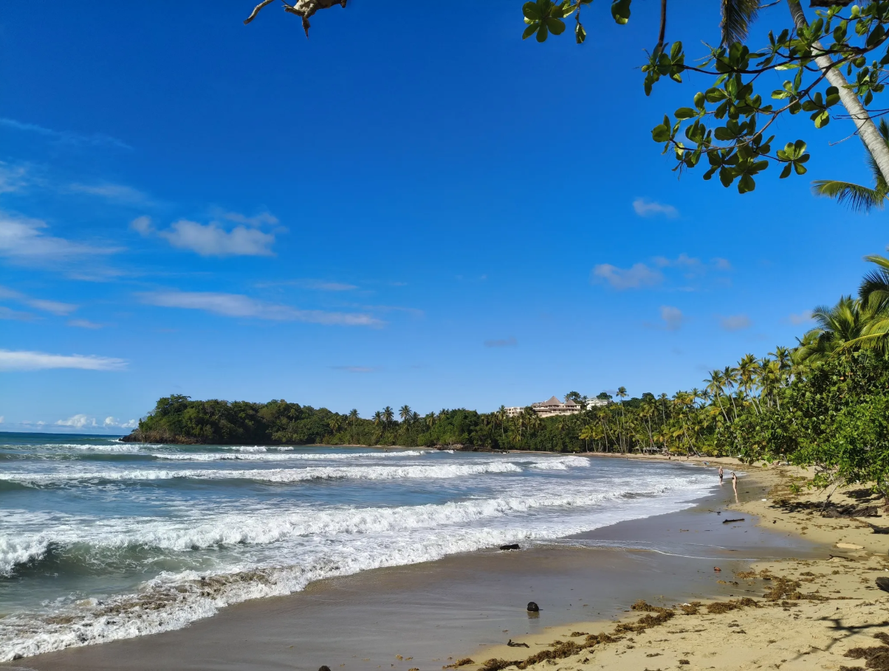
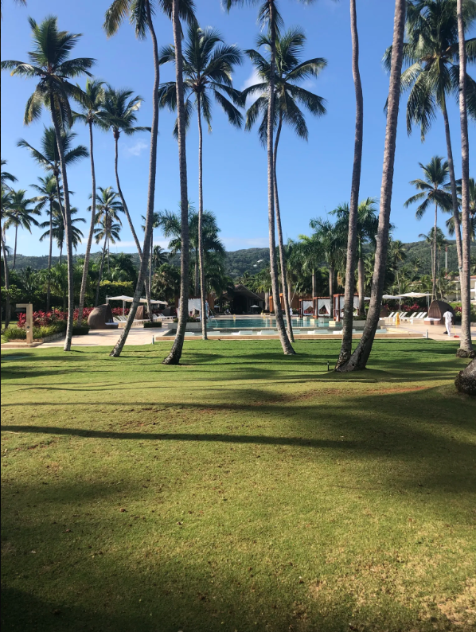
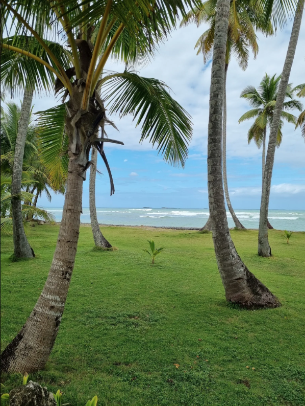
Ruta 2 · Circular Playa Portillo
El recorrido
La ruta más plana de las tres, con apenas 10 metros de desnivel acumulado. Sale desde el mismo centro de Las Terrenas y se dirige hacia el este, en dirección a Playa Portillo. A mitad de trayecto (3,13 km) llegas a la playa, un lugar perfecto para recuperar el aliento antes del retorno.
Todo el recorrido transcurre por carretera y pista asfaltada, con una combinación de 4,26 km pavimentados y 2 km de asfalto más compacto. Ideal para quienes prefieren superficies uniformes. Además, el punto de inicio tiene parada de autobús, por si quieres llegar desde otro punto del pueblo.
Runners que buscan ritmo constante sin interrupciones. El terreno llano permite mantener el paso sin sorpresas y hacer trabajo de series o fartlek.
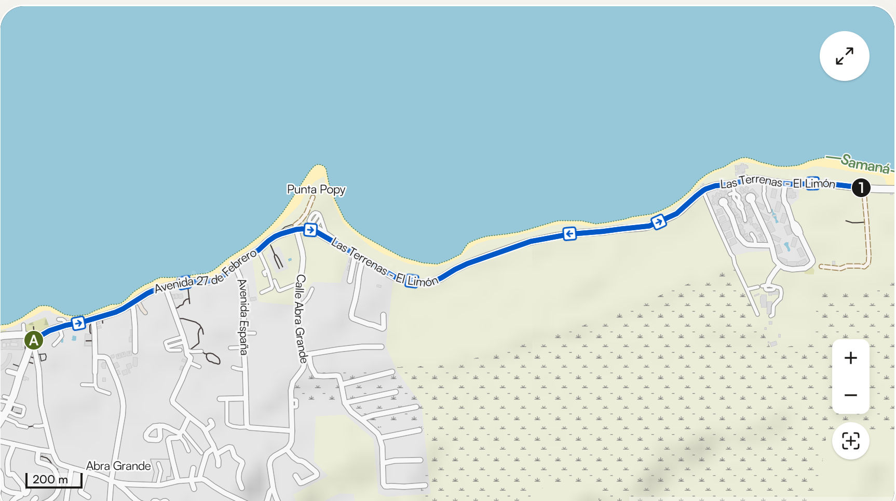
Recorrido circular · 6,26 km · salida desde Las Terrenas
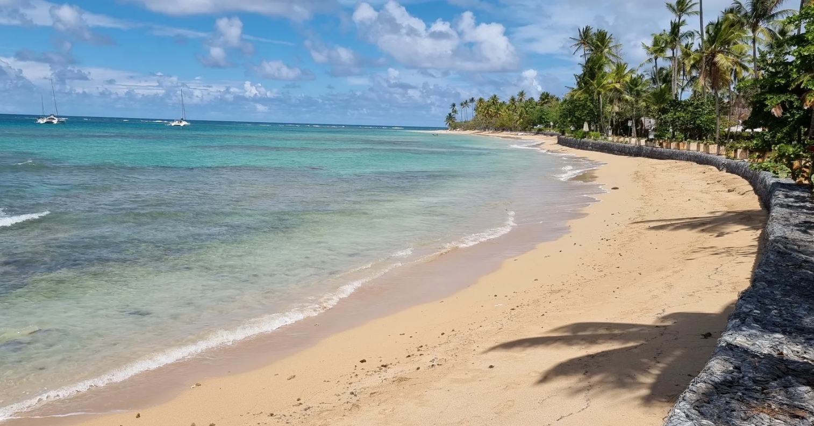
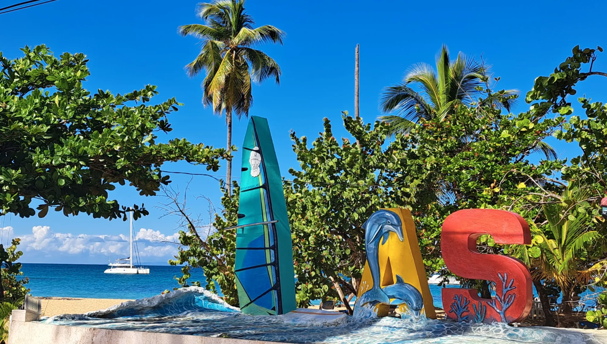
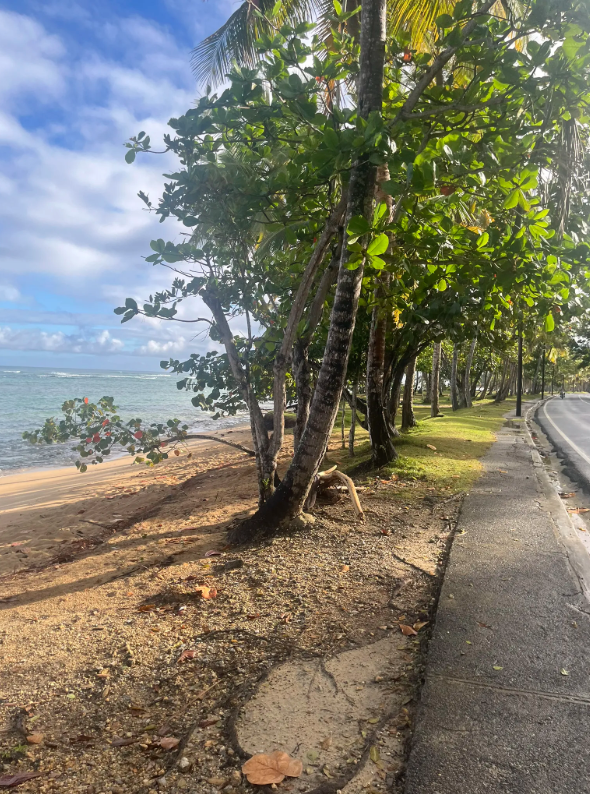
Ruta 3 · Playa Bonita Larga
El recorrido
La más completa de las tres rutas. Casi 9 km que combinan diferentes superficies: 2,22 km de sendero entre vegetación, 2,10 km de calle urbana, 1,59 km de senda más estrecha y tramos de carretera. Una variedad de terrenos que hace el recorrido más dinámico e interesante.
El punto de giro llega a los 5,32 km en Playa Bonita, después de haber cruzado entornos muy distintos: el bullicio tranquilo del pueblo, caminos entre palmeras y finalmente la apertura de la playa. El regreso ofrece una perspectiva completamente diferente del mismo territorio.
Lleva agua desde el inicio — no encontrarás puntos de avituallamiento en la ruta. Los 40 m de desnivel son suaves pero acumulados en varios repechos cortos. Zapatillas de trail o mixtas son la mejor opción para el tramo de sendero.
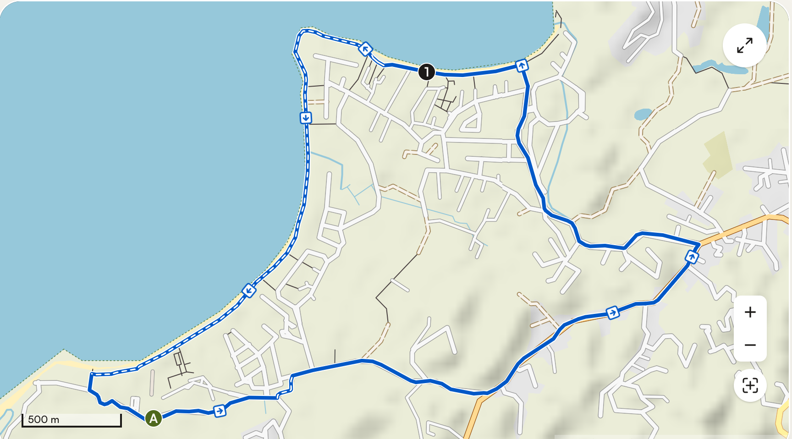
Recorrido circular · 8,79 km · superficies mixtas
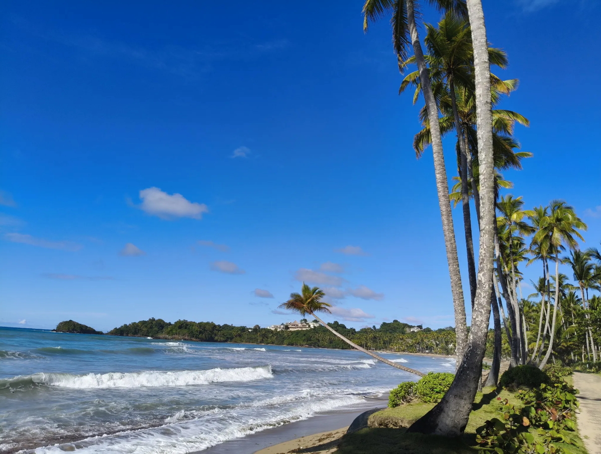
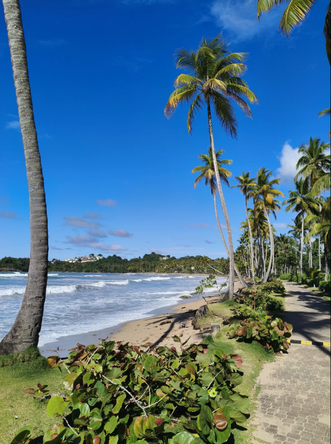
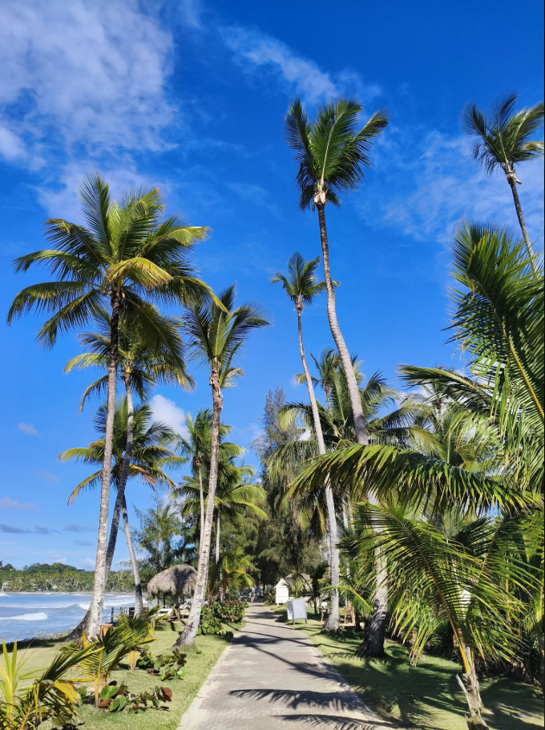
Consejos para correr en Las Terrenas
El clima caribeño tiene sus particularidades y hay algunos puntos clave para disfrutar del running aquí sin que el calor o la humedad arruinen el entrenamiento:
- Horario: sale antes de las 7:00 h o después de las 17:30 h. Entre medias el calor y la humedad son considerables.
- Hidratación: lleva siempre agua, especialmente en las rutas más largas. La sudoración es mayor que en climas secos.
- Ropa: tejidos técnicos ligeros y de colores claros. Protección solar en brazos y cuello.
- Superficies mixtas: las rutas combinan asfalto, pista y sendero. Una zapatilla de trail ligera o con suela mixta te dará mayor comodidad.
- Comunidad runner: Las Terrenas y Samaná tienen comunidades de running activas conectadas con grupos como Dominican Running. Una buena forma de conocer la zona y correr acompañado.
Nuestra villa está a 5 minutos de las salidas de estas rutas. Piscina de recuperación, duchas de agua fría y espacios para estirar en el jardín. El alojamiento perfecto para combinar entrenamiento y descanso en el Caribe.
Siguiente artículo
Qué hacer en Las Terrenas en 7 días →